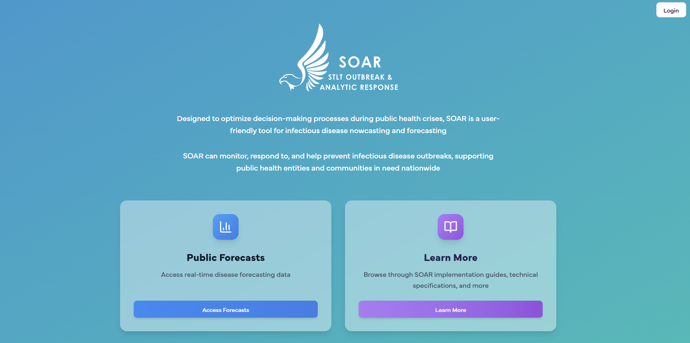
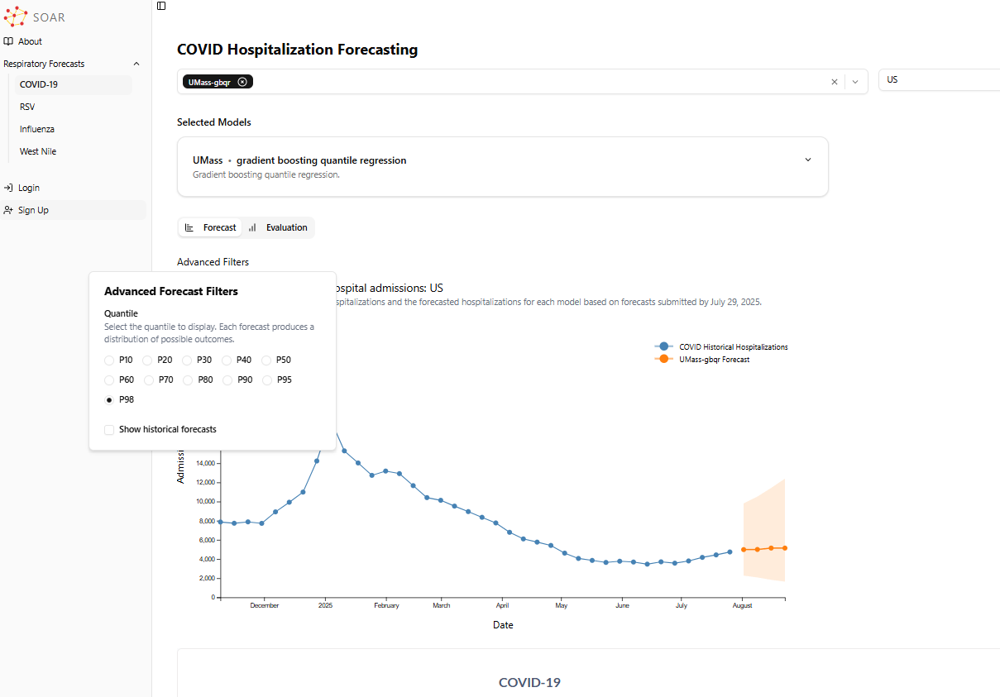
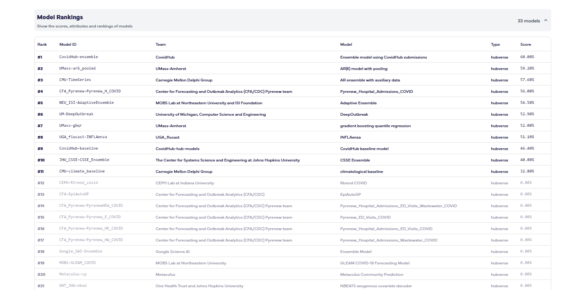
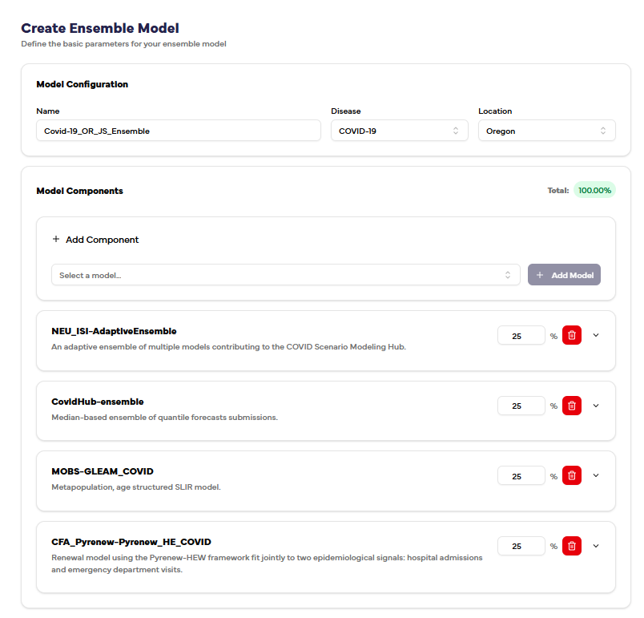
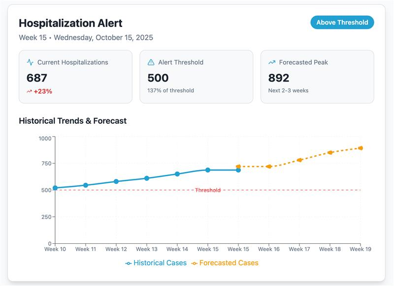
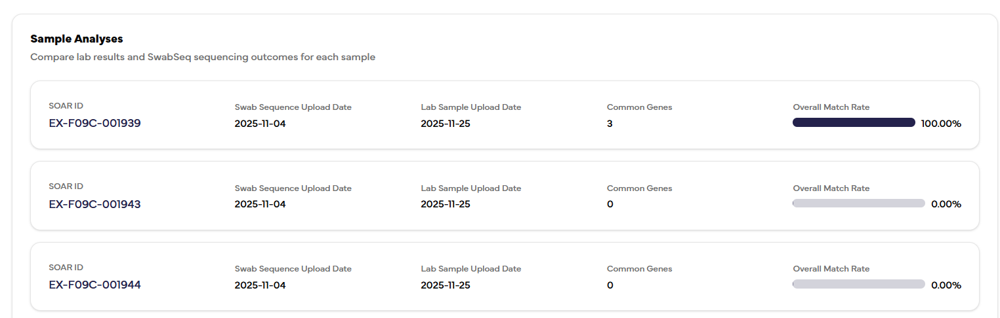
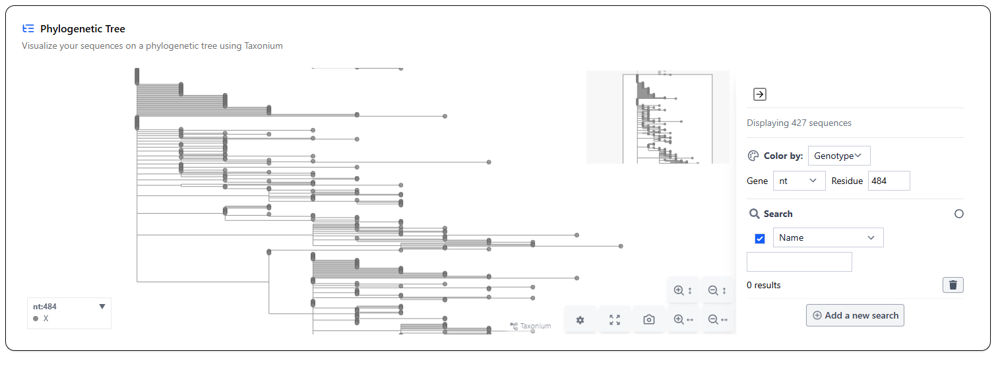
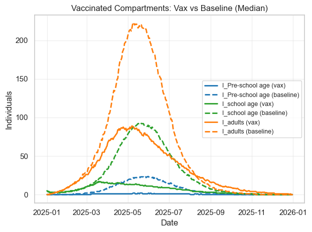

Forecast, evaluate, and act — in one platform
Program-led delivery 33 models · 4 pathogensProduct and delivery lead · forecasting, MQAT, genomics, alerting
Most forecasting tools stop at a chart. The hard problems for a public health agency come after that: which of the 33 available models should I trust, how do I combine them, how do I know when a forecast crosses a line that demands action, and how do I connect what the lab is sequencing to what the model is predicting. SOAR answers all four.
Forecasting & model selection
- Ensemble forecasting across COVID-19, RSV, influenza, and West Nile, with probabilistic quantile selection (P10–P98) and historical-forecast overlay
- Build-your-own ensemble — combine up to five component models with user-assigned weights summing to 100%, then evaluate the result against the field
- Automatic WIS evaluation in the data pipeline, so every model is continuously scored rather than trusted on reputation
- Peak-week prediction for influenza, expressed as a dated probability
Quality, genomics & response
- Model Quality Assessment Tool (MQAT) — ranks all 33 models against a multi-criteria decision framework with user-weighted criteria, saved filter sets, and transparent model cards
- UShER phylogenetic analysis — upload VCF or FASTA sequences and place them on a phylogenetic tree via Taxonium
- Lab-result reconciliation — compares state and county lab detections against sequencing outcomes per sample, scored by match rate
- Threshold alerting over email and SMS when forecasted hospitalizations exceed a configured level, with a four-step authoring flow
Integrated operationally, not just visually — I delivered the forecasting API
service with credential handling, a webhook receiver that auto-creates incidents from outbreak
alerts, and generic event-type routing so new alert classes onboard without code changes.
That closes the loop from forecast → alert → operational incident response.
Screens







